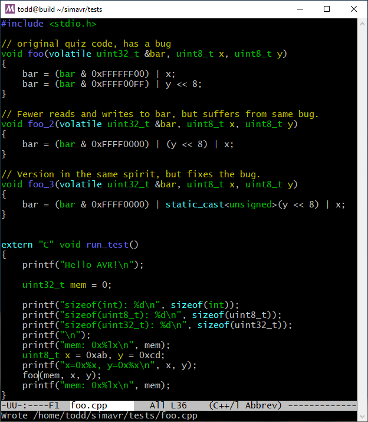

Earlier today I did an online interview with one of the self-driving automotive companies in Pittsburgh (there are several). My role there would be that of an embedded software engineer. I had already spoken to the hiring manager and that went well, and this was a live coding interview.
The first problem was introduced as a kind of easy warm-up, before the real embedded questions would begin. I was given the following:
Question 1: I said that the volatile keyword tells the compiler not to do common optimizations based on the normal semantics of memory, and the reason is usually that the address in question is mapped to some piece of hardware, which does some hardware-specific thing if you write to it or read from it. The idea is that the compiler will not assume that what you wrote there last time is still there, and will not take shortcuts by omitting what might, in normal memory, be a needless write. There are other uses of volatile also, but that is the main one in embedded work.
Question 2: That puzzled me quite a bit, in part because I thought that the answer that was probably desired required one to ignore the answer to the first question. In particular, the hardware might require two separate writes in order to work properly. This is not something that you can tell without looking it up. But this question is saying, more or less, to just make the code faster.
But there were lots of other issues going on in my mind about this code, which I will elaborate on below.
But first, shown below is the original code along with what I imagine is the desired answer. I think it is clear that the intent of the code is to put the value of the byte x in the lowest byte of the 32-bit destination, and to put the value of the byte y in the second-to-lowest position, and to leave the other bits alone.

My function foo_2() does this, and is, I believe,
equivalent to the function foo() provided, again,
that you ignore the whole point of Question 1. And indeed, if you run
this code on x64, say, or even ARM, both pieces of code seem to work,
and exactly the same. This is, I believe, what the question is
designed to elicit. Warm-up, right?
But wait! The original code is actually not really correct. And my hypothetical answer is not correct in exactly the same way. They have a subtle problem and it is worth considering exactly what it is, because it demonstrates an important gotcha that comes up in embedded work.
The problem is not with what is inside the body of the function. The problem is that this code uses different-sized unsigned and signed ints, combines them in expressions, and does not take care to attend to the very subtle and sometimes counter-intuitive rules that C (and C++) generally call the “usual conversions”.
Consider, for example, that the type of the expression “y” in the above is uint8_t, an unsigned one-byte quantity. But the type of the expression “y << 8” is actually a signed quantity, and I believe it is a signed int.
This code will fail to do what it intends to do under the rules of C or C++ when sizeof(int) is two. The reason is that the expression “y << 8” is signed, and then if it happens to have the high bit set, it will be sign extended into the full 32-bit value, setting all of the highest 16 bits to one, regardless of what they were before. (I hope it does not deploy the air bag!)
The problem does not arise if sizeof(int) is 4, or equivalently if sizeof(int) equals sizeof(uint32_t). But there are still embedded processors that have 16-bit native ints. One example is the smaller AVR processors, and another the MSP430.
To double-check that this would happen, I went and installed the avr-gcc and avr-g++ toolchains on my Linux box, and also a nifty AVR simulator that runs there, which I built and installed.
Using that stuff, I ran the C++ code you see above (which is connected to by some startup C code), and sent the printfs out the (simulated) UART for debugging output. And here is the result of running that code in the simulator:
In the first run, we write y=0x6d to the second-lowest byte. This value for y does not have most-significant bit of that byte set, and it works as intended.
But in the second run, we write y=0xcd to the second-lowest byte, which does have the most-significant bit set. And you can see that the high half of the word is 0xffff, all ones. This is not what the code is intended to do. It is a bug, and a potentially serious, or even catastrophic, one, depending on the context.
The important take-away is that when you mix signed & unsigned quantities, perhaps also differing in size, in C or C++ expressions, the rules of the language dictate what happens, how promotions are done, when signedness is preserved, and when it is not. These rules are subtle and sometimes counter-intuitive. But they are the result of many years of experience with C, and are the right rules. In any case, they are the rules.
For this reason, sometimes embedded code that you see might have a kind of naive look to it, using int instead of uint8_t in some (but not all!) contexts. Generally speaking this might be done in order to control the “usual conversions” so that they do not bite you. Indeed, in the original code the fact that it was passing in formal parameters as specific, small unsigned ints and then using them in the expressions given was a huge danger sign.
Clearly, the intent is to write prettier, more expressive code. And there is nothing wrong with that. But it is important to remember, I think, that when you volunteer to specify particular sizes and signedness for your subexpressions, you really are volunteering also to get exquisitely familiar with the intricacies of the “usual conversions”, and if you do not you will be bitten somtimes.
A direct fix appears in foo_3(), which simply casts the problematic
sign conversion back to unsigned, so the subsequent sign extension does not occur.
That works, but honestly a better approach for me would probably involve not packaging
the arguments the way they are in the quiz problem, but that takes us outside the
scope of this quiz problem because there are other tradeoffs involved.
Embedded work is fun!